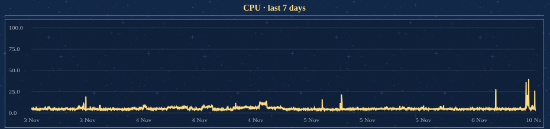

Self hosting: turning my old laptop into a server
I think it's fairly common to have old tech you don't use anymore, right? In my case, I have some old laptops that nobody at home uses. They are too slow, don't have enough ram, maybe the battery is degraded... But you don't throw them away because, who knows, maybe one day they're useful for something.
Well, that day came for me.
I had been wanting for a while to buy my own domain (.moe of course) and start hosting different things, but I didn't want to rent a vps (even if they had free options), because I don't want to rely on freebies. After thinking for a while, I decided to try using my own hardware.
Setup:
I took one of my old laptops, the one which was still kinda functional, but had a broken hinge. A visual interface is not needed, so I wasn't going to be opening and closing the lid once everything was set up.
It has the following specs:
- CPU: i3-4005U (4th gen intel core i3 CPU)
- RAM: 1x4GB DDR3
- Disk: 1TB HDD (Originally it had very low storage capacity, but a relative lent me a drive from their old computer)
Very low specs by today's standards, but more than enough for what I need.
I flashed a Debian ISO, connected it via Ethernet to my home network. The laptop is physically under my desktop, and I connect to it via ssh. It is permanently connected to power, and it is configured to work with the lid closed. I used some bottle caps to slightly raise it for better ventilation.
Connectivity:
I want to host multiple services. There are different ways to handle this, but what I found easiest is the following structure:
Each server is run on a docker container, and it exposes the service on a specific port. Then I use a reverse proxy (Nginx Proxy Manager) that redirects traffic to the correct service. NPM also handles https certificates.
At that point, I could connect to my services through my local network, but I couldn't access from outside. One way of solving that problem would be to open a port on my router and access my server through it, but opening a port to the internet is scary....
Luckily, there are tools to solve this problem :)
I have two types of services: public and private services. Public services can be accessed by anyone from their computer, but private services are services which can be accessed outside my home network, but only by authorized machines.
For my public services, I use cloudflare tunnels, which safely connects people to my services without opening ports. All of my tunnels point to my reverse proxy.
For my private services, I use Tailscale. This is a VPN service that runs over Wireguard. It allows to easily set up a vpn and has cool features like DNS between your machines. Then, I add DNS records pointing certain subdomains to my server's Tailscale IP. If a machine isn't on my tailnet, they won't be able to connect to my Tailscale IP.
Services:
-
This webpage:
I have a simple nginx http server that serves the html. Also I set up a very small golang backend for the side bar messages. I can change them from my phone with a Telegram bot.
I have the source code stored in a github repo and whenever I push to main, the web is deployed on my server.
-
Remote storage
I use copyparty. A lightweight file server with convenient features. It allows me to share big files with people easily. -
Music server
There are three different problems you have to solve when you want to have a music server:
-
Acquiring the music:
I set up a soulseek server which lets me search and download music.
-
Ordering the music:
I use beets to curate the metadata of each file and import it to my music library directory with the correct directory structure (/artist/album/songs)
-
Serving the music:
I use Navidrome, a server with a web client to listen to my music library. It supports the usual music client features: queues, playlists, lyrics... You can stream music with any client that supports the Subsonic protocol.
-
Acquiring the music:
-
Video streaming
For video streaming, my workflow is a lot more simple:
-
Acquiring the video:
I use transmission, a simple torrent client with a web client.
-
Storing the video:
Some releases can be pretty big, so I mounted a dedicated 2TB HDD specifically for video storage.
-
Accessing the video:
I have an nginx server that gives me urls to the files, and then I use mpv to stream it. (A bit messy, I know, but it works, it's simple, and very light).
-
Acquiring the video:
Afterword:
It's been a few months since I began this project, and many things have changed along the way. I think that I've reached a nice state, with services that fit my needs, and avoiding bloat.
There are even more things I use my server for. For example, you can set up game servers to play with your friends (but I don't have them active permanently). Also I'm thinking of activating wake-on-LAN on my main PC, and using my server to boot and connect to it remotely. Tere are so many things you can do, it's like playing sys-admin.
One concern one might have with this kind of setup is power consumption. I've tried to monitor it, but without smart sockets you can't really know how much power it is consuming. The closest thing I have are some periodic tasks that read different counters on the server so I can monitor different stats like CPU load, memory use, disk I/O...

I really recommend to try and do something like this if you have the opportunity. You learn a lot of things in the process, and you don't even have to pay for a domain if you don't want to; you can do everything through Tailscale if you are the only one connecting to your server.
Thanks for reading :)